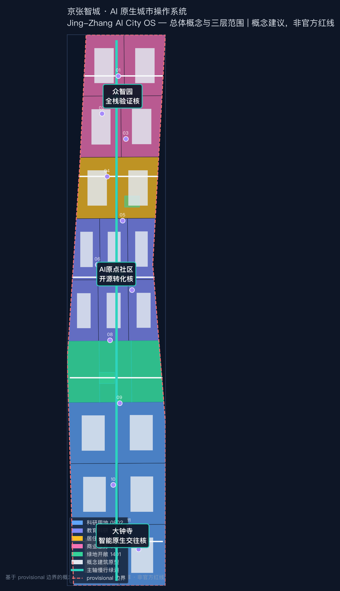
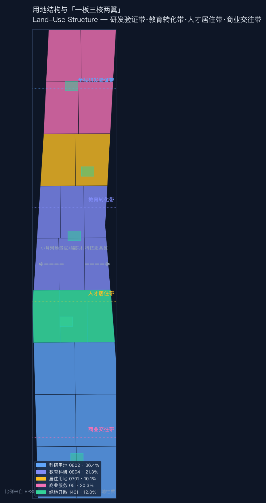
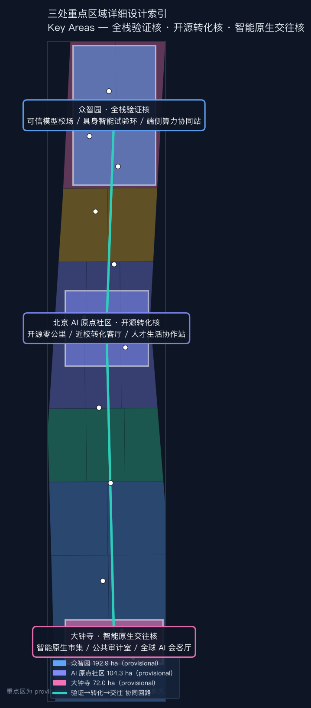
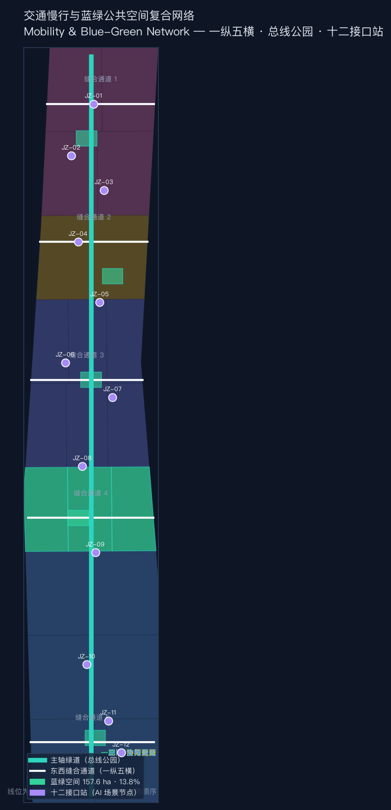
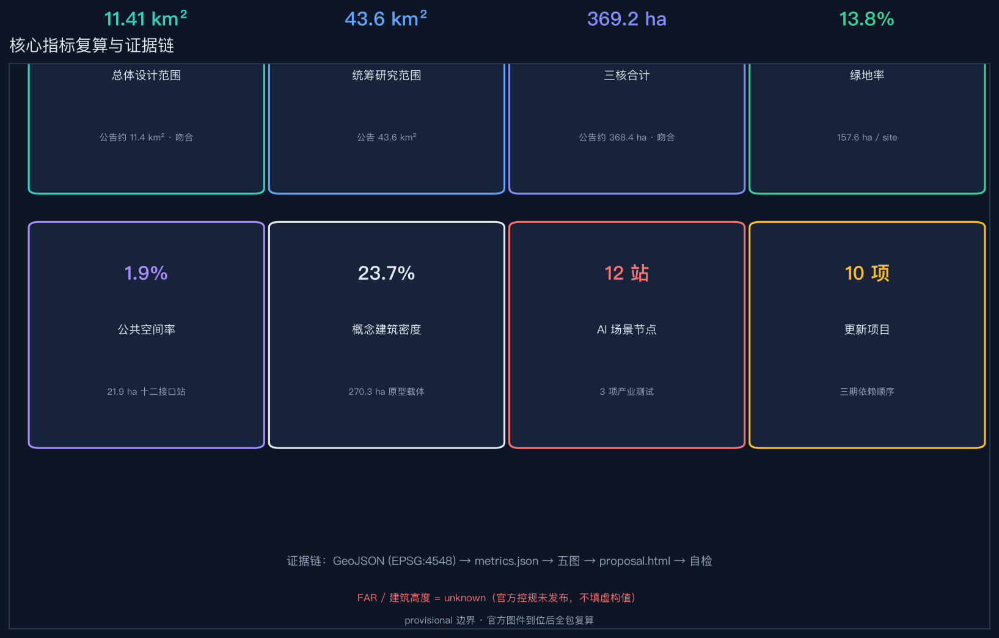

京张智城：AI 原生城市操作系统｜Jing-Zhang AI City OS
以「一板三核两翼」把百年京张遗址主轴重构为可进化的城市主板：共享总线（遗址活力带）串联全栈验证核（众智园）、开源转化核（AI原点社区）、智能原生交往核（大钟寺），两翼（中关村科技服务翼、小月河场景赋能翼）提供要素与场景供给，形成可复算、可迭代、可人工复核的 AI 原生城市操作系统。
京张智城：AI 原生城市操作系统
「京张智城」不把人工智能当作贴在城市表面的装饰层，而是把 43.6 平方公里研究范围视为一台可进化的「城市操作系统」：京张铁路遗址公园是贯穿南北的共享总线，众智园、北京 AI 原点社区、大钟寺是三个功能内核，中关村科技服务翼与小月河场景赋能翼是外设扩展槽。操作系统的基本原则是**内核最小化、接口标准化、模块可插拔、全程可审计**——对应到城市，就是公共空间连续开放、场景接口统一准入、更新模块渐进替换、AI 参与全程留痕。所有空间动作均为概念建议或供专业团队深化的参考方案，不替代正式规划，不构成政府审定或实施承诺。[standard:PROJECT-AGENT-OPEN-CALL-TASKBOOK]
设计依据与资料清单
本方案把事实依据分成三层。第一层是任务与标准依据：资格预审公告确认项目名称、三层范围与设计任务 [source:DATA-SRC-OFFICIAL-ANNOUNCEMENT-20260509]；面向智能体的任务书确认三大定位、五大功能、三区两翼、六项任务与公开合规边界 [source:DATA-SRC-AGENT-TASKBOOK-20260518]；住建部《城市设计管理办法》《控制性详细规划编制审批办法》与自然资源部《用地用海分类指南》提供专业语言与深度框架 [source:DATA-SRC-MOHURD-URBAN-DESIGN-MEASURES] [source:DATA-SRC-MOHURD-CONTROL-DETAILED-PLANNING] [source:DATA-SRC-MNR-LAND-USE-CLASSIFICATION-202311] [standard:MOHURD-URBAN-DESIGN-MEASURES] [standard:MOHURD-CONTROL-DETAILED-PLANNING] [standard:MNR-LAND-USE-CLASSIFICATION-GUIDE]。site package、公共来源注册表与处理事实包提供枚举、数据可用性与资料边界导航 [source:SITE-PACKAGE] [source:SOURCE-REGISTRY] [source:PROCESSED-FACT-PACK]。
第二层是空间约束：site_boundary.geojson 与三处重点区来自仓库 provisional polygon，official_boundary=false，仅用于生成、可视化、拓扑与内容评审，不用于官方红线、精确面积、权属、控规或审批判断 [source:DATA-SRC-PROVISIONAL-BOUNDARIES-20260605] [source:BOUNDARY-SOURCE] [source:KEY-AREA-SOURCE] [data:geometry/site_boundary.geojson#SITE-001] [data:geometry/key_areas.geojson#PROV-KEY-001] [metric:site_area_sqm]。官方 polygon 到位后必须整体替换边界并重算全部图层、指标、五张图、HTML 与 PDF。
第三层是本方案生成的设计提案：用地是从同一 provisional site 几何拓扑切分的完整分区（未覆盖面积 15 m²，可忽略）；建筑是「可逆更新载体原型」，不是现状测绘；道路是慢行与接驳概念线，不是道路红线；绿地、公共空间、场景节点与分期均为可讨论的设计层 [depth:existing_conditions_diagnosis] [depth:overall_spatial_structure]。图纸与网页只解释这些机器数据，不新增事实。

三层范围工作框架
统筹研究范围（公告约 43.6 平方公里）回答「海淀如何形成世界级 AI 创新生态与未来城市形态」；总体设计范围（公告约 11.4 平方公里，provisional 复算 11.41 平方公里）回答「产业、更新、交通、市政、蓝绿与风貌如何组织成一套城市设计」；重点区域范围（公告约 368.4 公顷，provisional 三核复算合计 369.2 公顷）回答「三个核心片区如何以不同机制完成验证、转化与交往」[metric:research_area_sqm] [metric:site_area_sqm] [metric:key_area_count] [depth:three_level_scope_framework]。
三层通过「总线—内核—插槽」逻辑逐级收敛：研究范围定操作系统架构（产业生态与未来形态），设计范围定主板布线（空间结构与更新框架），重点区域定内核微架构（三个片区的详细设计）。provisional 边界仅表达层级关系，不表达法定范围。[data:geometry/land_use.geojson#LU-04-SPINE]

统筹研究范围产业与未来城市研究
命名与视觉识别
主名称「京张智城」，英文「Jing-Zhang AI City OS」，命名体系为「智城 = 总线 + 内核 + 插槽」：主轴绿脉称「总线公园」（Bus Park），三核分别称「验证核 / 转化核 / 交往核」，场景节点称「接口站」（Interface Station），编号如 JZ-07。Logo 方向：以京张铁路钢轨断面与电路板走线同构的抽象图形，轨道枕木隐喻「标准接口」，信号灯三色隐喻「人工复核门」，视觉基调为深空蓝 + 信号绿 + 钢轨灰。[depth:overall_spatial_structure] [standard:PROJECT-AGENT-OPEN-CALL-TASKBOOK]
三大定位、五大功能与三区两翼协同回路
三大定位（百年京张文化带、都市 AI 生活体验带、AI 融合创新带）在操作系统中对应三组系统属性：文化带=只读存储器（保存铁路记忆与中关村精神，不可篡改），体验带=用户界面（居民与访客可感知的 AI 生活场景），创新带=中央处理器（研发、验证、转化、迭代的算力中枢）。五大功能对应五个内核服务：AI 全栈自主创新体系（验证核）、世界级 AI 创新生态（转化核）、AI+ 场景赋能新范式（插槽协议）、智能化 AI 活力城市（总线服务）、AI 治理全球话语权（审计服务）。[standard:PROJECT-OFFICIAL-ANNOUNCEMENT]
三区两翼协同回路：众智园「验证核」产出可信模型与测试数据 → AI 原点社区「转化核」把成果转译为产品与人才 → 大钟寺「交往核」完成展示、交易与国际对话 → 中关村科技服务翼供给资本、知识产权与全球要素 → 小月河场景赋能翼把场景开放为公共试验场 → 验证结果回流众智园形成迭代闭环。[data:geometry/key_areas.geojson#PROV-KEY-001] [data:geometry/key_areas.geojson#PROV-KEY-002] [data:geometry/key_areas.geojson#PROV-KEY-003]
全球 AI 创新生态案例转译
六个可借鉴案例及其空间转译（均来自公开资料，仅作背景参照）：[depth:overall_spatial_structure] [metric:global_ai_ecosystem_case_count]
| 案例 | 关键机制 | 空间/运营转译 | | --- | --- | --- | | 硅谷 Sand Hill Road | 资本与法律服务的步行可达集聚 | 大钟寺交往核内设「要素服务街」，风投、法务、知识产权 15 分钟步行圈 | | 伦敦 King's Cross | 铁路遗产区更新为创新街区，公共空间先行 | 京张遗址主轴采用「公共空间先行、渐进更新」的同序策略 | | 新加坡 one-north | 绿地连续的创新社区，实验场景合法化 | 众智园验证核内设明确边界的低速试验环与测试申请制 | | 波士顿 Kendall Square | 产学研步行联系与公共客厅 | AI 原点社区强化校区—园区—社区三圈步行缝合 | | 杭州云栖小镇 | 大会品牌驱动产业集聚 | 大钟寺「全球 AI 城市周」作为年度品牌活动 | | 首尔 Digital Media City | 文化内容与数字产业混合 | 遗址公园沿线植入数字叙事与内容创作接口站 |
以上案例仅用于说明机制可迁移性，不构成对任何园区、企业或政策的背书或承诺。
总体设计范围城市更新与控规深度城市设计
总体设计范围以「一板三核两翼」为空间结构：**一板**是沿京张遗址公园的连续公共总线（南北贯通、东西缝合），**三核**是北端众智园、中段 AI 原点社区、南端大钟寺三个功能内核，**两翼**是向东西两侧延伸的科技服务翼与场景赋能翼。用地结构从北到南为「研发验证带—教育转化带—人才居住带—商业交往带」，由主轴绿脉串联，避免产业功能封闭成园。[data:geometry/land_use.geojson#LU-01-W] [data:geometry/land_use.geojson#LU-05-C] [metric:land_use_research_sqm] [metric:land_use_green_sqm]
城市更新采用「可逆更新、先公共后建筑、先首层后整体」框架：第一步开放公共空间与首层界面（低扰动），第二步在建筑、权属、文保、市政调查完成后做保留/修缮/适应性改造/局部更新/新建的多方案比较，第三步形成连通的更新网络。不预设大拆大建，不把任何地块写成已确定拆改留结论。[depth:retain_renovate_demolish] [depth:development_intensity_controls]
功能比例（概念分区复算）：科研用地约 415 公顷（36.4%）、教育科研约 243 公顷（21.3%）、商业服务约 231 公顷（20.3%）、居住约 115 公顷（10.1%）、绿地开敞约 137 公顷（12.0%）。这些比例是方案内部一致性表达，不是已批用地性质。[metric:land_use_research_sqm] [metric:land_use_education_sqm] [metric:land_use_commercial_sqm] [metric:land_use_residential_sqm] [metric:land_use_green_sqm]
建筑规模与高度控制：FAR、建筑高度、建筑密度等法定控制指标在官方控规条件发布前保持 unknown，不填虚构值；本方案以「公共空间日照与风环境、遗址视线、消防与市政承载、混合功能、可逆结构」作为比较维度，供专业团队深化。[depth:height_massing_character] [metric:floor_area_ratio] [metric:building_height_m] [standard:MOHURD-CONTROL-DETAILED-PLANNING]

重点区域详细设计
三个重点区均使用 provisional polygon，下列位置、面积与内部结构只作方向性设计，需 official key area、地块、建筑与控制条件补齐后重绘。[data:geometry/key_areas.geojson#PROV-KEY-001] [data:geometry/key_areas.geojson#PROV-KEY-002] [data:geometry/key_areas.geojson#PROV-KEY-003] [metric:key_area_zhongzhiyuan_sqm] [metric:key_area_origin_community_sqm] [metric:key_area_dazhongsi_sqm] [depth:three_key_area_detailed_design]
众智园 · 全栈验证核（北端，provisional 约 192.9 公顷）
定位为花园型 AI 全栈自主创新与安全验证街区。空间组织为「可信模型校场—具身智能低速试验环—端侧算力与能源协同站」三段验证链，每段都有明确边界、安全门与公众解释界面。建筑更新优先适配可分隔实验单元、设备搬运与共享评测空间；交通只提出与五环及轨道站点的概念接驳，等待道路、防洪与安全条件复核。运营抓手是测试申请制、风险分级、现场观察、第三方复核与结果公开摘要。[data:geometry/public_space.geojson#SCN-01] [data:geometry/public_space.geojson#SCN-02] [data:geometry/public_space.geojson#SCN-03]
北京 AI 原点社区 · 开源转化核（中段，provisional 约 104.3 公顷）
定位为近校型成果转化与人才生活社区。空间组织「开源零公里—近校成果转化客厅—人才生活协作站」三类公共接口：第一类记录开源贡献与版本，第二类连接技术、法务、知识产权、场景与客户，第三类把居住、托育、运动、学习与夜间协作纳入创新日常。更新采用小步试用：先开放首层、空闲时段与共享设施，再根据使用证据决定后续；不得假设高校、园区或业主已同意改造。慢行重点是校区、园区、社区与轨道站点之间的无障碍连续性。[data:geometry/public_space.geojson#SCN-05] [data:geometry/public_space.geojson#SCN-06] [data:geometry/public_space.geojson#SCN-07]
大钟寺 · 智能原生交往核（南端，provisional 约 72.0 公顷）
定位为城市型智能原生商务、消费与国际交往街区。空间上以「智能原生市集—城市模型公共审计室—全球 AI 会客厅」形成从公众体验到专业讨论的界面；四象限步行缝合只表达期望关系，不给出桥隧或施工可行性结论。建筑首层优先服务路演、展示、短期工作、社区消费与非机动车停放；公共绿地复合使用必须服从绿地、交通安全与活动许可。运营通过公开体验路线把商业传播与模型责任、数据来源、人工申诉结合起来。[data:geometry/public_space.geojson#SCN-10] [data:geometry/public_space.geojson#SCN-11] [data:geometry/public_space.geojson#SCN-12]

AI 创新生态、人才画像与 AI+ 场景
六类用户画像
1. **研发者与开源维护者**：需要可预约评测、安静协作、贡献记忆与跨机构接口；2. **初创与中小企业**：需要原型设备、合规咨询、首批客户与低成本阶段性空间；3. **大企业产品与运营团队**：需要真实问题、可审计试验与国际交流；4. **周边居民与照护者**：需要低扰动、无障碍、儿童友好、可清楚退出 AI 服务的日常空间；5. **高校师生**：需要成果转化、学习展示与安全慢行；6. **国际访客与非中文使用者**：需要双语、无应用也可使用的导视与公共交通接驳。画像不来自个人追踪，只是服务设计角色，真实运营前应通过自愿参与研究校准。[metric:user_persona_count]
十二张场景卡
| 场景 | 类型与空间 | 最小数据 | 人工复核与退出 | | --- | --- | --- | --- | | 可信模型校场 | 产业测试 / 众智园 | 公开测试集或已授权数据 | 专业评测员签署结果，不发布敏感样本 | | 具身智能低速试验环 | 产业测试 / 众智园 | 设备状态与匿名事件 | 安全员现场接管，明确物理停止按钮 | | 端侧算力与能源协同站 | 产业测试 / 众智园 | 设备能耗和任务队列 | 运维审批，不采集个人内容 | | 京张记忆译站 | 文化 / 遗址节点 | 清权史料与展签 | 史实审校，标注不确定内容 | | 开源零公里 | 地标 / AI 原点 | 项目自愿提交的版本与许可 | 维护者确认，允许撤回展示 | | 近校成果转化客厅 | 生态 / AI 原点 | 团队自愿公开需求 | 专业服务人员复核，不替代法律意见 | | 人才生活协作站 | 社区 / AI 原点 | 公共服务目录 | 人工客服和线下窗口并行 | | AI 慢行守护站 | 公共服务 / 主轴 | 公开路网、匿名障碍反馈 | 人工核验后发布，无手机替代路线 | | 无障碍路径共创台 | 公共服务 / 中段 | 用户主动提交的障碍类型 | 当事人可匿名，专业无障碍审核 | | 智能原生市集 | 新业态 / 大钟寺 | 产品说明与现场安全记录 | 场地运营方审核，可暂停单项体验 | | 城市模型公共审计室 | 治理 / 大钟寺 | 模型卡、数据卡、影响说明 | 多角色评议，发布少数意见 | | 全球 AI 会客厅 | 地标 / 大钟寺 | 公开议程与报名信息 | 活动主办方确认，禁止暗示政府承诺 |
其中三项产业测试验证场景明确写入 scenario_category=industry_test；全部十二站写入 [data:geometry/public_space.geojson#SCN-01] 至 SCN-12，并设置 human_review_required=true [metric:scenario_node_count] [metric:industry_test_scenario_count] [metric:scenario_card_count]。场景设计遵守数据最小化、目的限定、可解释、人工接管、线下替代与可退出六条底线，不把未成熟技术写成全面部署。[depth:municipal_new_infrastructure]
用地、建筑规模与拆改留方案
用地结构以连续开放空间为中介，而非把产业封闭在园区墙内。南端加强智能原生商务、文化与人才生活，中段加强近校科研、开源转化与社区服务，北端加强全栈研发、安全验证与低碳算力。每个分区采用仓库枚举中的 05、0701、0802、0804、1401 类代码，但它们是设计语言，不是已批用地性质。[data:geometry/land_use.geojson#LU-02-W] [standard:MNR-LAND-USE-CLASSIFICATION-GUIDE] [depth:land_use_layout]
建筑图层由概念载体原型构成（18 个原型，总基底约 273 公顷，占提交边界约 24.0%），见 [metric:building_footprint_area_sqm] [metric:building_footprint_ratio]。这些 footprint 只用于验证公共空间、首层开放、研发模块与东西联系能否形成合理关系，置信度为 low；它们不代表现状建筑数量、建设规模或可拆除对象。正式深化需逐栋补充用途、年代、结构、安全、产权、能耗、历史价值与使用者意见，然后进入保留/修缮/适应性改造/局部更新/新建的多方案比较。[data:geometry/buildings.geojson#BLDG-001] [depth:retain_renovate_demolish]
交通、轨道、市政与公共服务设施
交通结构为「一纵五横」：一纵是京张智城公共体验绿道（主轴慢行总线），五横分别服务大钟寺四象限、中段场景翼、AI 原点近校联系、北中段创新社区与众智园对外接驳 [data:geometry/roads.geojson#ROAD-SPINE-001] [metric:road_length_m] [metric:crosslink_count]。线位全部限制在 provisional site 内，表达需求关系而非道路红线。正式深化必须使用轨道出入口、道路断面、公交、客流、停车、非机动车、无障碍、消防与市政资料进行可达性与安全校核。[depth:traffic_rail_slow_parking]
慢行策略先处理「能否连续、安全、无障碍地到达」，再讨论智能化。AI 只辅助归并公众自愿上报的障碍、生成可解释替代路线与安排活动日引导；任何推荐都提供普通标识、现场人员与纸面地图作为降级路径。停车先区分通勤、访客、无障碍、装卸与活动峰值，优先以轨道接驳、共享出行与规范非机动车停放减少公共空间挤占。
市政与新型基础设施采用「可插拔服务单元」：端侧算力只处理明确授权任务，分布式能源与储能需能源和消防专项，公共 Wi-Fi 与传感设备使用最少采集和最短保留，模型输出保留人工申诉。设施位置、容量、管线与工程可行性均待 official 资料，不把概念节点写成确认建设。[data:geometry/constraints.geojson] [depth:municipal_new_infrastructure]
蓝绿空间、公共空间与城市风貌
蓝绿系统由一条连续主脉和三条东西绿指组成，绿地复算面积约 157.7 公顷、比例约 13.8% [metric:green_space_area_sqm] [metric:green_ratio]；公共空间以较窄的可步行共享界面与十二个接口站广场形成，面积约 21.9 公顷、比例约 1.9% [metric:public_space_area_sqm] [metric:public_space_ratio]。这些数值从设计几何复算，只说明方案内部一致性，不是法定绿地率或官方面积。[data:geometry/green_space.geojson#GREEN-SPINE-01] [data:geometry/public_space.geojson#SCN-01] [depth:blue_green_public_space]
公共空间有三种时间尺度：百年尺度讲京张铁路与中关村创新史；年度尺度承载开发者节、公共审计周与城市体验季；日常尺度服务通勤、运动、照护、休息、学习与小型协作。导视用「轨线 + 站码 + 人工确认点」构成：例如 JZ-07 / 京张记忆译站，每个站牌同时标明数据来源、AI 是否参与与非数字服务入口。[standard:MOHURD-URBAN-DESIGN-MEASURES]
四个「AI 朝圣 / 荣誉」节点 [metric:ai_pilgrimage_landmark_count]：**开源零公里**（AI 原点，记录可验证的公共代码与工具贡献）、**百年道岔**（遗址公园中段，展示铁路技术、城市选择与版本分歧）、**城市模型公共审计室**（大钟寺，保存模型卡、失败案例与少数意见）、**全球 AI 会客厅**（大钟寺，承载跨语言公共讨论）。它们不是巨型雕塑，而是可使用、可更新、可质疑的公共组件。任何历史内容先做史实审校，任何人物、企业、论文图片与商标先做版权授权，任何选址先做文保、绿线、蓝线与交通安全核验。[standard:PROJECT-AGENT-OPEN-CALL-TASKBOOK]

更新项目清单、实施政策与分期计划
十个项目原型构成从空间到运营的最小闭环：JZ-01 总线公园连续步行与导视；JZ-02 大钟寺四象限无障碍缝合；JZ-03 智能原生市集与公共审计室；JZ-04 AI 原点开源零公里；JZ-05 近校成果转化客厅；JZ-06 人才生活协作站；JZ-07 众智园可信模型校场；JZ-08 具身智能低速试验环；JZ-09 端侧算力与能源协同站；JZ-10 百年道岔文化节点。每项都需记录空间、使用者、运营主体建议、前置数据、安全门、退出条件与复核指标，而不是只列建设名称。[depth:renewal_project_list] [metric:renewal_project_count]
分期不是批准开发时序，而是依赖顺序，共三期 [metric:phase_count] [metric:phase_1_area_sqm] [metric:phase_2_area_sqm] [metric:phase_3_area_sqm]：一期「开放与验证」（约 325.6 公顷）优先做公开资料台账、导视、无障碍共创、活动原型与可撤除设施 [data:geometry/phasing.geojson#PHASE-001]；二期「协同更新」（约 477.1 公顷）在建筑、权属、交通、市政与文保调查完成后比较更新方案并连成网络 [data:geometry/phasing.geojson#PHASE-002]；三期「全栈深化」（约 338.6 公顷）把有效的场景准入、人工复核、运营责任与公共知识版本化 [data:geometry/phasing.geojson#PHASE-003] [depth:phasing_implementation]。
年度运营采用四季循环：春季「公开问题征集与场景招募」，夏季「低风险原型与公共体验」，秋季「全球 AI 城市周与同行评议」，冬季「结果审计、失败展与下一版规则发布」。开发者社区维护问题库，场景运营方维护安全与服务，专业团队维护空间与工程判断，公众代表拥有反馈与退出权。国际传播不以企业数量或投资承诺为主，而发布可复用规则、失败教训、公共空间数据字典与双语路线。所有活动均受 [source:DATA-SRC-AGENT-TASKBOOK-20260518] 的边界条款约束。[depth:phasing_implementation]
指标体系、面积复算与合规矩阵
机器可复算指标分三类。第一类是几何一致性：provisional site 面积（11,412,825 m²）、绿地面积与比例、公共空间面积与比例、概念建筑基底面积与比例，全部使用 EPSG:4548 复算。第二类是结构数量：用地分区（21）、重点区（3）、场景节点（12）、横向联系（5）、阶段（3）、用户画像（6）、场景卡（12）、朝圣地标（4）、生态案例（6）、更新项目（10）。第三类是 unknown 的官方控制：FAR、高度、道路红线、设施容量等，必须等待 official/cleared 数据。[depth:metrics_recalculation] [metric:site_area_sqm] [metric:green_ratio] [metric:public_space_ratio] [metric:building_footprint_ratio] [metric:land_use_zone_count] [metric:key_area_count] [metric:scenario_node_count] [metric:crosslink_count] [metric:phase_count]
compliance_matrix.json 覆盖公告 1.3、1.4、1.5 及 agent.1–agent.6，逐条挂接正文、九类 GeoJSON、指标、A3/A0、HTML、来源、假设与自检。standard_matrix.json 对五项强制依据全部 addressed，建筑深度标准因缺官方文件保持 data_gap。design_depth_matrix.json 的十五项 required depth 全部 complete；complete 表示本阶段提供了可定位证据与明确缺口，不表示官方批准或工程完成。[depth:risk_missing_data]
风险、版权与合规说明
九类主要数据缺口已进入 assumptions.json：official 总体边界、official 三处重点区、控规、道路交通、建筑与权属、文保、市政安全、法定蓝绿控制与公共空间运维。最关键风险不是「图不够精确」，而是把概念精度误读为规划精度；因此所有图面使用低对比虚线表达 provisional 边界，所有派生数值说明只用于方案内部复算。官方图件到位后若不整体重算，本方案即失去一致性。[data:geometry/site_boundary.geojson#SITE-001] [depth:risk_missing_data]
AI 风险采用场景级控制：不使用秘密、企业内部或个人隐私数据；医疗、法律、安全与公共服务输出仅作信息辅助；高风险场景必须人工批准、现场接管、日志审计与公开申诉；模型失败与少数意见进入公共审计室。任何活动、招商、政策、资金、伙伴、建设或运营表达均为概念建议，不构成已确定政府决定。全部原创生成与外部背景引用见 report/copyright_statement.md 与 sources.json。
本方案的已知隐患是缺乏 official polygon 与现状专业底数，因此只能作为内容评审与专业深化的高完整度起点，不能进入精确面积评分、法定规划、工程设计或投资决策。提交前执行 deterministic validation、spatial review、visual packaging check 与 professional evidence review；通过只代表具备机器检查与内容评审基础，不代表方案优秀、可建或获批。
参考资料
- 公告与范围任务：[source:DATA-SRC-OFFICIAL-ANNOUNCEMENT-20260509]
- 智能体六项任务与边界条款：[source:DATA-SRC-AGENT-TASKBOOK-20260518]
- 城市设计、控规与用地分类：[standard:MOHURD-URBAN-DESIGN-MEASURES] [standard:MOHURD-CONTROL-DETAILED-PLANNING] [standard:MNR-LAND-USE-CLASSIFICATION-GUIDE]
- 项目与任务标准：[standard:PROJECT-OFFICIAL-ANNOUNCEMENT] [standard:PROJECT-AGENT-OPEN-CALL-TASKBOOK]
- 建筑专业深度缺口：[standard:MOHURD-ARCH-DESIGN-DEPTH-2016]
- 全部图层索引：[data:geometry/site_boundary.geojson#SITE-001] [data:geometry/key_areas.geojson#PROV-KEY-001] [data:geometry/land_use.geojson#LU-01-W] [data:geometry/buildings.geojson#BLDG-001] [data:geometry/roads.geojson#ROAD-SPINE-001] [data:geometry/green_space.geojson#GREEN-SPINE-01] [data:geometry/public_space.geojson#SCN-01] [data:geometry/constraints.geojson] [data:geometry/phasing.geojson#PHASE-001]